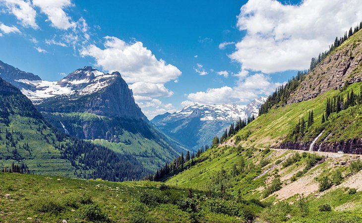

Summer Activities
fly Fishing
 Many Montanas view summer as a time to get out and wet some line trying to catch that big fish they want to hang over their fireplace and stare at in the depths of winter. Fly fishing is a much more technical sport than other forms of fishing and allows for you to spend some much needed time outside.
exploring
Exploring Montana's national parks and wilderness areas is another great way to spend those long summer hours. Glacier and Yellowstone provide great scenery that needs exploring. So grab your hiking boots and hit the trail.
Swimming
Swimming is another great activity to dive into in the summer. Montana is full of lakes and rivers that provide ample swimming areas for individiuals who want to get out and away from packed swimming pools